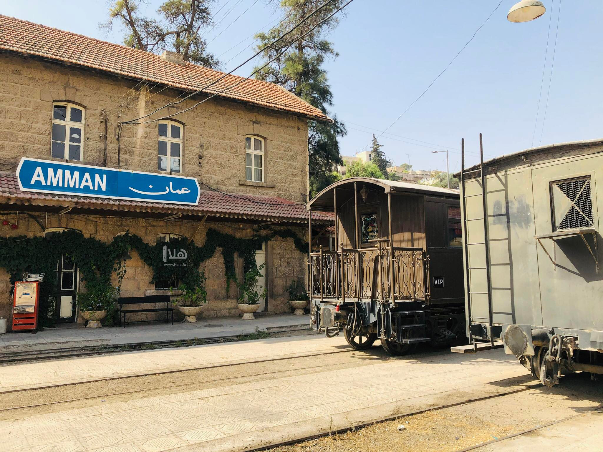
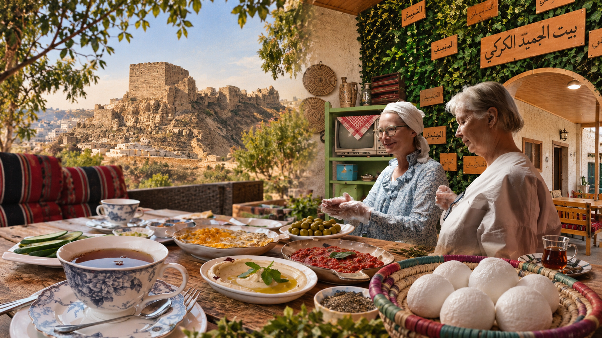
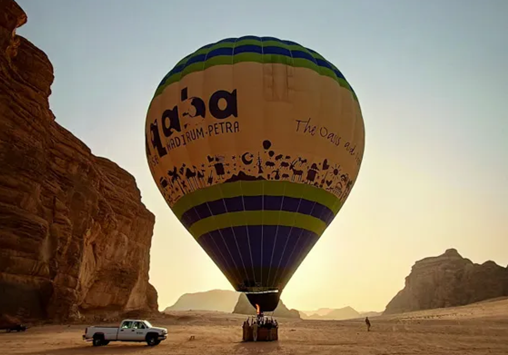
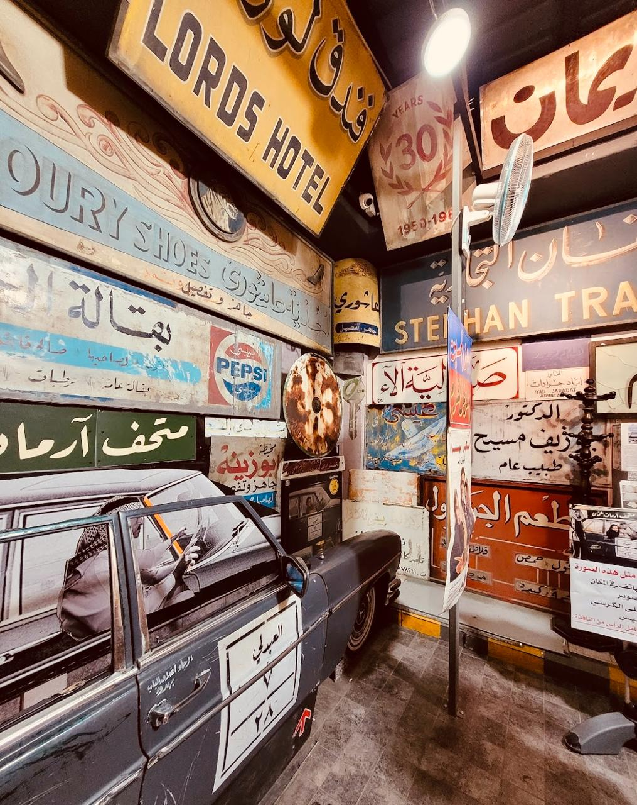

Where to go??

Step into Jordan’s railway history at a historic station on the Hejaz Railway, once a vital link across the region.
Historic Heritage
Explore the station, locomotives, and historic carriages.
Railway Experience
Discover the Hejaz Railway’s story and its role in the region.
Step Into History
See vintage trains and station details, and capture the moment.

A heritage guesthouse in Al-Marj, Karak, offering an authentic taste of local hospitality and cuisine.
Food Experience
Prepare dishes and learn traditional local recipes.
Breakfast & Lunch
Enjoy Karaki meals made with local flavors.
Stay & Experience
Stay in a heritage inn rooted in local culture.

A memorable ride above Wadi Rum, with panoramic views of its mountains and desert landscape.
Aerial Views
See Wadi Rum from a whole new perspective.
Balloon Ride
Enjoy a peaceful flight above the desert.
Wadi Rum, Jordan
Take in the desert scenery from the sky.

A cultural space preserving Amman’s memory through the old signs that once shaped its streets and everyday life.
Old Signs
Discover vintage signs and ads, each with a story from Amman.
A Walk Through Time
See the city’s past through its streets, signs, and atmosphere.
Amman Heritage
Explore a unique side of Amman’s history and local culture.